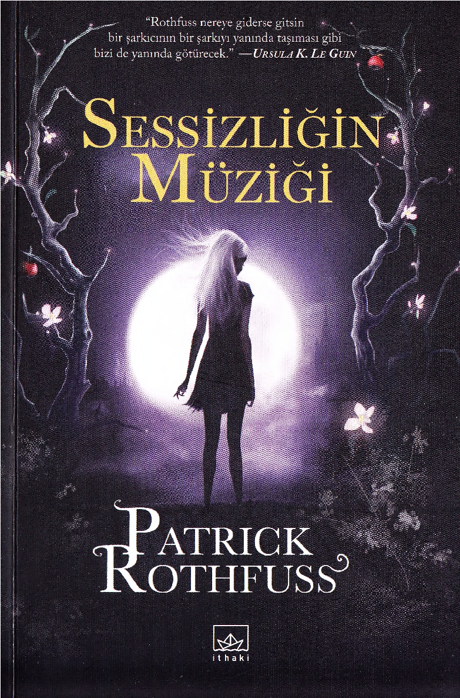
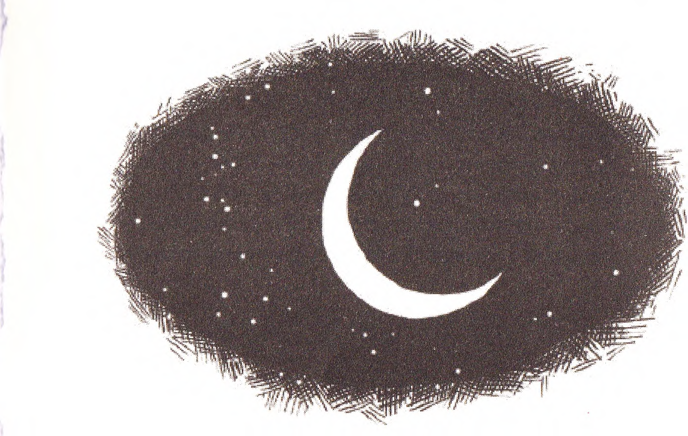
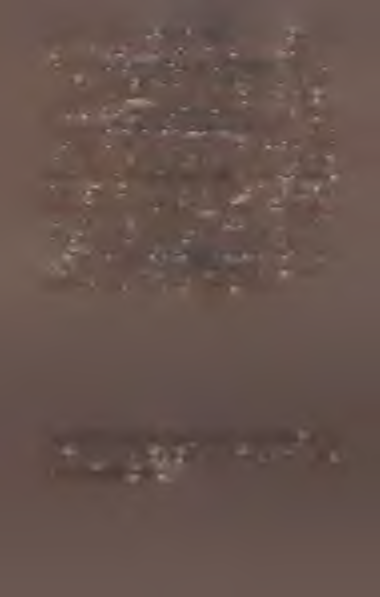
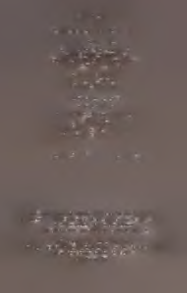
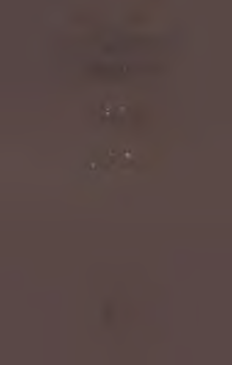
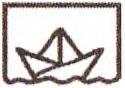

Patrick Rothfuss 1973’te Wisconsin’de doğdu. Çocukluk
yıllarında, yaşadığı yerdeki hava koşullarının sertliği ve
kablolu televizyonsuzluk yüzünden kendini kitaplara verdi. Washington Üniversitesi’ndeki yüksek lisans programının ardından, 1999 yılında mezun olduğu Wisconcin Üniversitesi - Stevens Point’e dönerek İngiliz Dili ve Edebiyatı Bölüm ü’nde ders vermeye başlayan yazar halen bu mesleğe
devam etmektedir. Rothfuss, Kralkatili Güncesi serisinin ilk
kitabı Rüzgarın Adt’nı yedi yılda tamamladı. Dünyada fırtınalar koparan bu ilk romanı tam otuz iki dile çevrildi ve 2007’de Quill Ödülü ile Publishers Weekly - Yılın En İyi Fantastik Kurgu Kitabı Ödülü’ne layık görüldü. Serinin ikinci romanı Bilge Adamın Korkusu da yayımlandığı ilk hafta Amerika’da çoksatanlar listesine bir numaradan girdi.
Sözcükleri, gülmeyi seven, dans etmekten hoşlanmayan
ve hâlâ kablolu televizyonu olmayan Rothfuss boş zamanlarında sivil itaatsizlik ve simya ile uğraşmaktadır.
Yazarın İthaki’den çıkan diğer kitapları: K ralkatili Güncesi
1. Gün: Rüzgarın Adı (2011), K ralkatili Güncesi 2. Gün: Bilge
Adamın Korkusu (2011).

Sessizliğin Müziği
Patrick Rothfuss
Orijinal Adı: The Slow Regard o f Silent Things
İthaki Yayınları - 1005
Yayma Hazırlayan: Alican Saygı Ortanca
Kapak Uygulama: Şükrü K arakoç
Sayfa Düzeni ve Baskıya Hazırlık: Kübra Tekeli
1. Baskı, Nisan 2015, İstanbul
Kapak görseli: Laura Brett
İllüstrasyonlar: Nate Taylor
İç Tasarım: Alissa Theodor
ISBN: 978-605-375-452-7
Sertifika No: 11407
Türkçe çeviri © Cihan Karamancı, 2015
© İthaki, 2015
© Patrick Rothfuss, 2014
illüstrasyonlar © Nate Taylor, 2014
Kapak Görseli © Laura Brett, 2014
Yayıncının yazılı izni olmaksızın alınlı yapılamaz.
İthaki'“ Penguen Kitap-Kaset Bas. Yay. Paz. Tic. Ltd. Şti.’nin yan kuruluşudur.
Bahariye Cad. Dr. İhsan Ünlüer Sok. Ersoy Apt. A Blok No: 16/15 Kadıköy - İstanbul
Tel: (0216) 348 36 97 - Faks: (0216) 449 98 34
editor@ithaki.com.tr — www.ithaki.com.tr - www.ilknokta.com
Kapak, Iç Baskı: Deniz Ofset Matbaacılık
Gümüşsüyü Cad. Topkapı Çenter, Odin İş Merkezi No: 403/2 Topkapı-lstanbul
Tel: (0212) 613 30 06 - Faks: (0212) 613 51 97
Sertifika No: 29652

